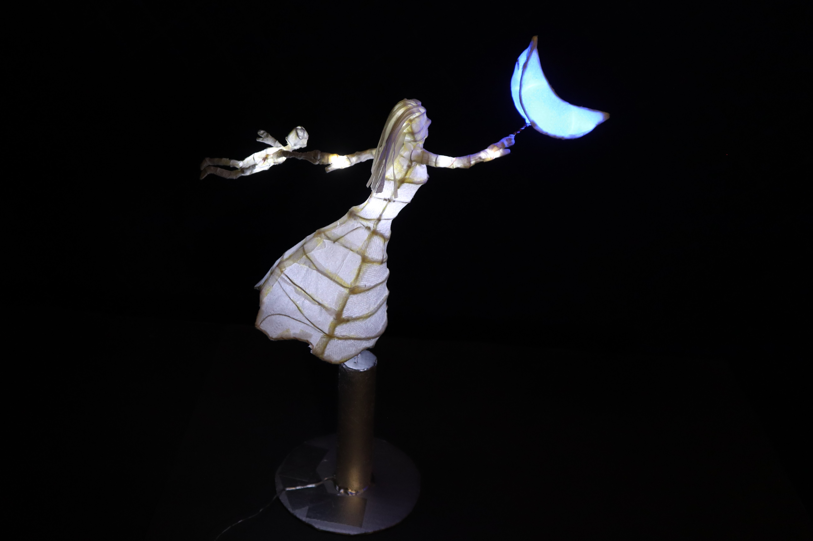

Hello, I'm Cristian. On this site, I document my engineering projects, primarily focused on electronics and programming. Additionally, you'll discover my work in 3D art, ranging from wire sculptures to projects involving paper, plaster, LEDs, and much more. Please note that this site is still in development, so there's more to come... What inspires me? When we were kids, some of us dreamt of becoming doctors, firefighters, astronauts, or even dinosaur hunters. My childhood dream was to be an inventor. As I grew up, I found inspiration in figures like Alessandro Volta, Michael Faraday, and Thomas Alva Edison (particularly due to my fascination with electricity and magnetism), as well as Igor Sikorsky and many others—essentially, anyone who created something. This admiration still holds true today. In the age of the internet, I'm constantly amazed by the immense talent out there. I see people from all corners of the world making things that I could've never imagined, and it fuels my inspiration. Just think about what Leonardo Da Vinci could achieve if he were alive in our era! One of the things that makes us, humans, such a unique species is our innate capability to turn the ideas in our heads into reality. Whether it's inventing a new machine, sculpting a work of art, painting, compiling discoveries into a book, or composing a new song, we possess the remarkable ability to bring our thoughts to life. I find immense satisfaction in the act of 'making' things, and I wanted to share my creations with the world. So, I invite you to do the same and unleash your imagination to create something, anything. The possibilities are limitless, and it would be a shame to waste such potential by going through life without utilizing these abilities. You'll be astounded by your own capabilities, discovering a whole new world, and who knows, you might even end up creating the next masterpiece :) 